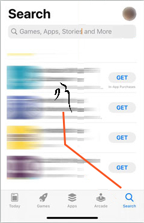
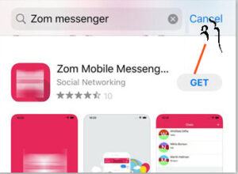
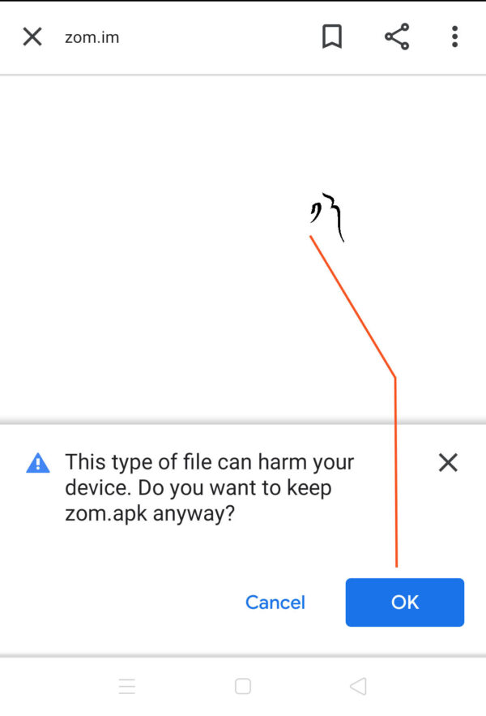
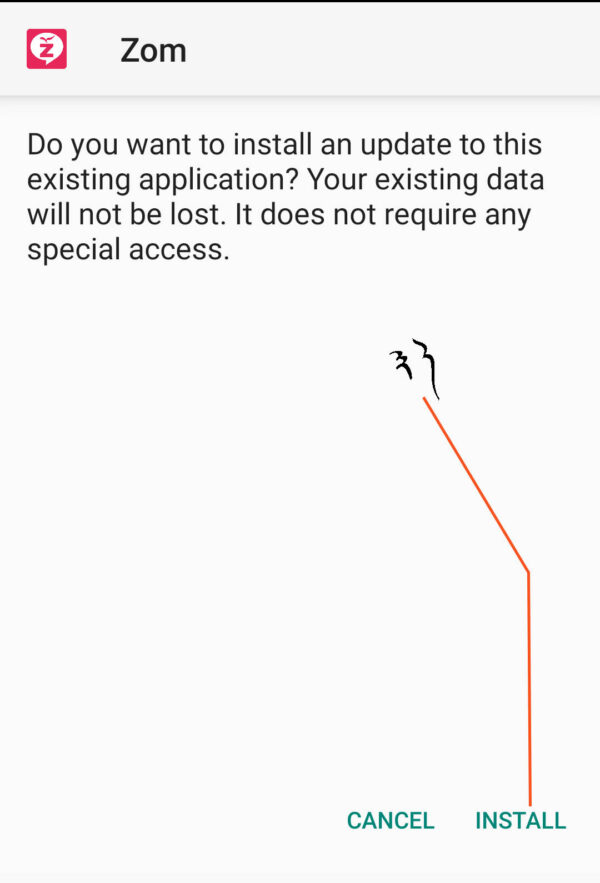
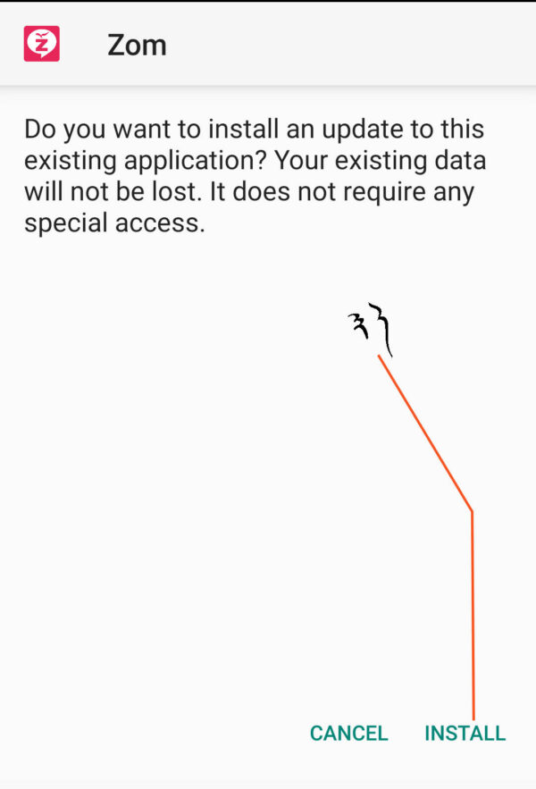
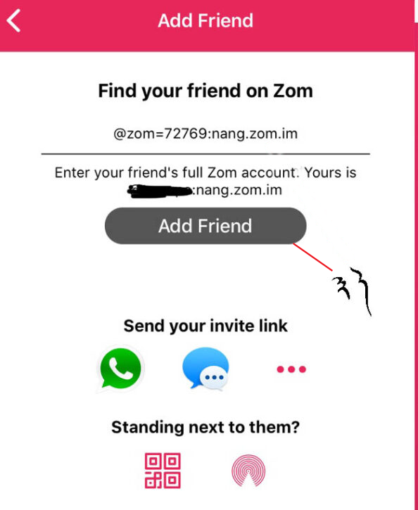
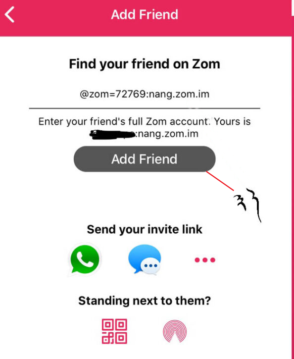

འབྲེལ་ཐག་འདིའི་སྟེང་ལ་བསྣུན་ཏེ་ཕབ་ལེན་བྱོས། https://apps.apple.com/cn/app/zom-mobile-messenger/id1059530167
 ཁྱེད་ཀྱི་ཁ་པར་ཨན་གྲོ་བདུན་པ་ལས་རྙིང་བ་ཡིན་ན་འབྲེལ་ཐག་འདི་བརྒྱུད་ནས་ཁུངས་མི་གསལ་བའི་ཡིག་ཆའི་ཁོངས་ནས་མཉན་ཆས་ཕབ་ལེན་བྱས་ཆོག་པའི་སྒོ་ཕྱེ་དགོས།
འབྲེལ་ཐག་འདིའི་སྟེང་ལ་བསྣུན་ཏེ་ཕབ་ལེན་བྱོས། https://zom.im/download/zom.apk
 



༡༽ ཁྱེད་རང་གི་འཛོམས་ཀྱི་མིང་ངམ་ཨང་གྲངས།
༢༽ གསང་ཚིག
༣༽ གསང་ཚིག་བསྐྱར་དུ་ཕྲིས།（གསང་ཚིག་གཉིས་ཀ་གཅིག་མཚུངས་ཡིན་དགོས）
* ཁྱེད་ཀྱིས་ངེས་པར་དུ་གསང་གྲངས་དེ་ཉར་ཚགས་དམ་པོ་བྱས་ཏེ་གཞན་གྱིས་མི་ཤེས་ཤིང་རང་གིས་འཚོལ་བདེ་བའི་གནས་ལ་འཇོག་དགོས། གལ་སྲིད་ཁྱེད་ཀྱིས་གསང་གྲངས་བརྗེད་པ་དང་ཡང་ན་ཁ་པར་བོར་བརླག་བྱུང་ཚེ། ཁྱེད་འཛོམས་མ་ལག་ཏུ་སླར་ཡང་འཇུག་པ་ལ་འཛོམས་ཀྱི་མིང་བྱང་ID དང་གསང་གྲངས་ངེས་པར་དུ་དགོས།
གདམ་ག ༡ ༽ ངའི་མིང་བྱང་། zom=72769
གདམ་ག ༢ ༽ ང་ཡི་རྩ་གཉིས་བཤེར་གྲངས།
གདམ་ག ༣ ༽ གཤམ་གྱི་འབྲེལ་ཐག་ལ་བསྣུན་ཏེ་གྲོགས་པོ་གསར་སྣོན་བྱོས།
https://zom.im/i/#@zom=72769:nang.zom.im

 


༡ ༽ གླེང་མོལ།
༢ ༽ གྲོགས་པོ།
༣ ༽ གསར་རྙེད་།
༤ ༽ ང་།
༤.༡ ༽ ཁྱེད་ཀྱི་འཛོམས་ཀྱི་ཨང་གྲངས་རེད།
༤.༢ ༽ ཁྱེད་ཀྱི་འཛོམས་ཀྱི་མིང་བྱང་ ID རེད། ཁྱེད་ཀྱིས་སོ་སོའི་འཛོམས་ཀྱི་ཨང་གྲངས་དང་མིང་བྱང་ID གང་རུང་དྲ་གྲོགས་ཚོར་བསྐུར་ཏེ། འཛོམས་ནང་དུ་གྲོགས་པོ་བསྒྲིག་ཆོག
༤.༣ ༽ འདི་ཁྱེད་ཀྱི་འཛོམས་ཀྱི་གསང་གྲངས་རེད། འདི་ནས་གསང་གྲངས་ལ་ལྟ་ཆོག་ལ་བརྗེ་ཡང་ཆོག
འཛོམས་ཇི་ལྟར་བཀོལ་སྤྱོད་བྱེད་པ་དང་དེའི་རྣམ་གྲངས་གཞན་ཁག་ཤེས་འདོད་ན་འཛོམས་ཀྱི་གཞུང་ཕྱོགས་དྲ་རྒྱ་ལ་ཕེབས་རོགས།